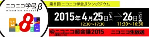
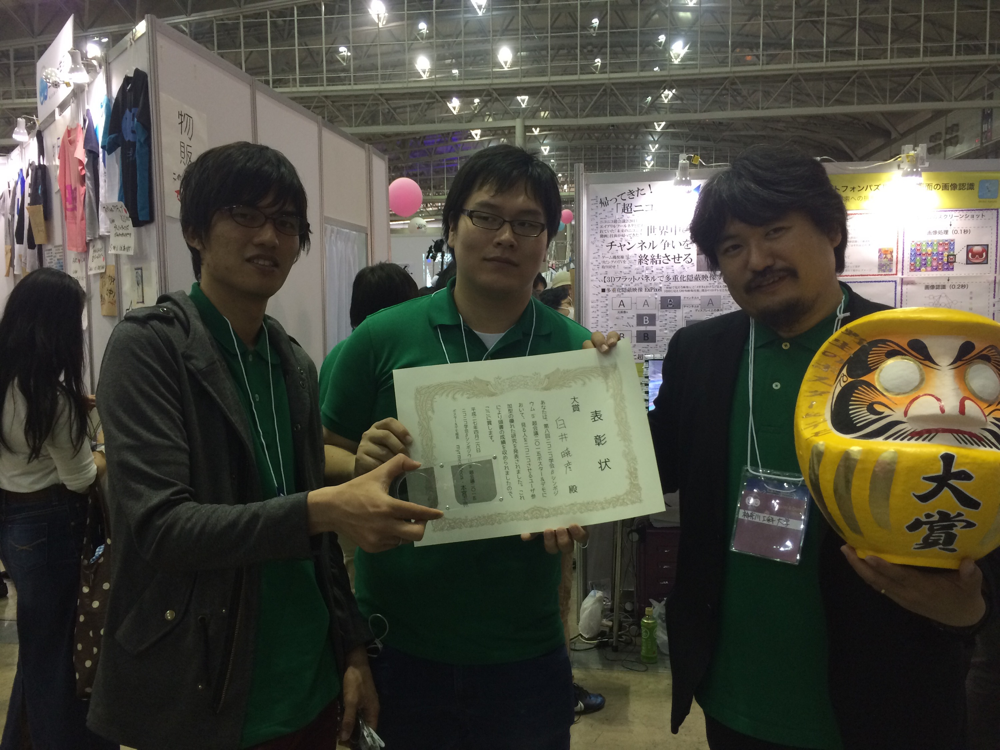
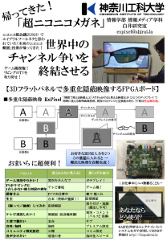
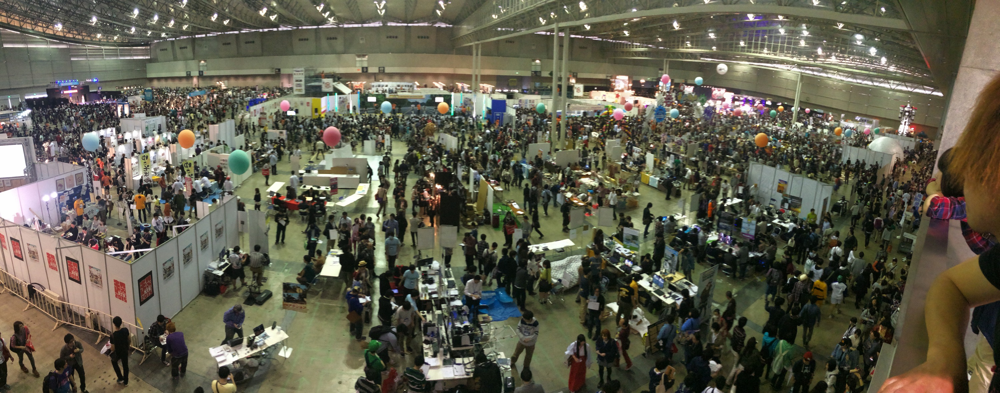

ニコニコ超会議2015にて研究成果が大賞受賞
2015年4月25・26日、幕張メッセで開催されたニコニコ動画のユーザ交流イベント「ニコニコ超会議2015」内で開催された「第8回ニコニコ学会βシンポジウム」に、ポスター＆デモ枠で参加し、会場投票で1位の「大賞」を受賞しました。
https://niconicogakkai.tumblr.com/post/116240789761/8-more

“帰ってきた「超ニコニコメガネ」”
～3Dフラットパネルで多重化隠蔽映像するFPGAボード
https://niconicogakkai.tumblr.com/post/115894649076/more
{kind=link}
ニコニコ超会議2015の来場者数は過去最多の15万1115人。
主催者側の想定を超える250票を超え、ダントツの票数で大賞を受賞したそうです。

トロフィーのだるまと賞状
{kind=link}
【白井先生のコメント】
「みんながニコニコする研究として、権威ではなく、会場に来られた皆さんが選んで頂けたことが素晴らしいと思います。最初は研究室内でも本イベントに参加希望する人も少なかったのだけど、大塚研究室や3年生が展示スタッフとして参加してくれたおかげで、素晴らしい結果になりました。中心的に開発していた田口くん、そして、学会ボランティア関係各位にも感謝を伝えたいと思います」
#ニコニコ超会議2015 ニコニコ学会βで掲示したポスターに対する来場者さんたちの物理タグ。主催者の想定を大幅に上回る250票以上のタグをつけて頂きました。表彰状「見る人をニコニコさせるユーザー参加型の優れた研究」とあり、ほっこり。 pic.twitter.com/TWkRKPsFvg
— Akihiko SHIRAI, Ph.D (@o_ob) April 28, 2015
ほとんどが「もっと評価されるべき」と「発想の勝利」、ですが「俺の嫁」、「人類には早すぎた」、「未来きてた」、「俺得」などもありじわじわきます。 pic.twitter.com/OlqNusB4g1
— Akihiko SHIRAI, Ph.D (@o_ob) April 28, 2015
第8回ニコニコ学会βシンポジウム「ポスター＆デモ 大賞」の素敵なリボン勲章ロゼッタです。色も緑だし。 手作り製品らしく詳細はこちら。 https://t.co/4SxVxG970R pic.twitter.com/9LkTvu3jct
— Akihiko SHIRAI, Ph.D (@o_ob) April 28, 2015
配布したフライヤーとポスターがこちらです。
ExPixel FPGAをベースに、ニコニコ動画のユーザをペルソナに設定した応用方法を提案しました。
{kind=link}

また初日の夜は「外のニコニコ学会β 〜研究者って海外いったほうがいいの？〜」にてライトニングトークを提供させていただきました。
https://peatix.com/event/83125
以下写真とツイートで紹介します。
世間はAppleWatchだけど、私の腕はかなり前からPebbleでiPhone繋がってる。 Ingressで攻撃されると左腕にダメージが来る感覚はかなりサイバーでジリオン風味。 Pebbleは本体の軽さと低電力Bluetoothの実装が素晴らしく、基盤技術の重要性を味わえる。
— Akihiko SHIRAI, Ph.D (@o_ob) April 24, 2015
@o_ob haptic は Immersion さんで特許だらけですよ。障碍者の方が起業されたそうです。
— はフィクションでありすべて架空のものです (@mack2000) April 24, 2015
今夜はこのタイトルで話してみようと思う！"英語が通じない世界でVR研究しながら子育てしてみた"／外のニコニコ学会β 〜海外と・海外で研究してみた〜 https://t.co/3VT1tVtOJz #ニコニコ超会議
— Akihiko SHIRAI, Ph.D (@o_ob) April 24, 2015
舞浜駅から予定の電車なう。 D(ディズニー)とC(超会議)でカオス。 その間にR(力士)に挟まれております。
— Akihiko SHIRAI, Ph.D (@o_ob) April 24, 2015
今回の発表スタッフは緑のポロで揃えてみた。 なお今日の白井は赤と白のオッドアイです。 pic.twitter.com/i07SHy3yNh
— Akihiko SHIRAI, Ph.D (@o_ob) April 24, 2015
超まるなげ広場、コスプレ、自衛隊、アニメ、ゲーム、ニコニコ学会準備作業中です。 #ニコニコ超会議 pic.twitter.com/MYvxsi8Kee
— Akihiko SHIRAI, Ph.D (@o_ob) April 24, 2015
ピット作業中 今年ドワンゴ運営さんたちはオレンジみたいです。 社員さんの朝礼見たかったなー pic.twitter.com/TMRe2nx3lx
— Akihiko SHIRAI, Ph.D (@o_ob) April 24, 2015
帰ってきた！「超ニコニコメガネ」準備完了です！ #ニコニコ超会議2015 pic.twitter.com/sfA3BLv7kO
— Akihiko SHIRAI, Ph.D (@o_ob) April 25, 2015
Niconico user festival stated. Chaoous 🙂 #ニコニコ超会議2015 pic.twitter.com/wsLPZyRc7i
— Akihiko SHIRAI, Ph.D (@o_ob) April 25, 2015
Just a part of hall of Japanese pop culture. pic.twitter.com/b0IeQxyeUZ
— Akihiko SHIRAI, Ph.D (@o_ob) April 25, 2015
@Yukiharu_W @sadabo0078 @ikeike443 @tetsu3 本日ご新規フォローありがとうございます！ via https://t.co/kiUB69CSXP
— Akihiko SHIRAI, Ph.D (@o_ob) April 25, 2015
大盛況のニコニコ学会β会場より「帰ってきたニコニコメガネ」生放送 https://t.co/JEK7c7OQ9u #ニコニコ超会議2015 pic.twitter.com/1kQOrxIZfl
— Akihiko SHIRAI, Ph.D (@o_ob) April 25, 2015
さてと…。 展示の方はいい感じなので、今夜の発表準備するかな。 ところで超コスプレコーナーはアデランスさんが協賛なのだけど、恥ずかしくないように変身するのはとても重要な事だなと思います。 pic.twitter.com/GwzgSrwq5u
— Akihiko SHIRAI, Ph.D (@o_ob) April 25, 2015
とてもためになるし面白い。SC必聴。第8回ニコニコ学会βシンポジウム～現実性を超えて～@ニコニコ超会議2015[DAY1] https://t.co/OrPfQEg45T
— Akihiko SHIRAI, Ph.D (@o_ob) April 25, 2015
ゴルゴ13体験すごいな やってみたい pic.twitter.com/hbEszYfEiS
— Akihiko SHIRAI, Ph.D (@o_ob) April 25, 2015
そういやマイクロマウス国際大会2015は東京工芸大学(厚木)開催 pic.twitter.com/ZYBNLLE2ye
— Akihiko SHIRAI, Ph.D (@o_ob) April 25, 2015
ExPixel大人気かつ 3年生が展示解説やっているので 出番なくて素晴らしい pic.twitter.com/PpX1s5DjWS
— Akihiko SHIRAI, Ph.D (@o_ob) April 25, 2015
「セーラー服おじさんも感動！」 的な絵ですね ご体験ありがとうございます！ #ニコニコ超会議2015 pic.twitter.com/o7uJWkoSI2
— Akihiko SHIRAI, Ph.D (@o_ob) April 25, 2015
皆さんお疲れ様でした 本日全てのプログラムが終わりました。 しっかりうがいして休んで 明日もがんばって展示しつつ 面白いものを見ましょう！
— Akihiko SHIRAI, Ph.D (@o_ob) April 25, 2015
Nice to see Benjamin Joffe. We can make discussion in 3 languages. pic.twitter.com/UOofQx8BBZ
— Akihiko SHIRAI, Ph.D (@o_ob) April 25, 2015
今夜の「外のニコニコ学会」でのLTでは、今まで話したこともないような日本の学術界に巣食うルサンチマンの仕組みや"タイムマシン"、フランスでの子育て研究者ライフについて話できた。驚いたのは中学2年生になったげんきくん(@genkioyuh2a2bht )とお母さんに会えたこと。
— Akihiko SHIRAI, Ph.D (@o_ob) April 25, 2015
「日本のことを嫌いで嫌いでしょうがない」というエネルギーが、彼をタイムマシンで過去と未来に送り、故郷の美しさと幼稚さを知り、未来をやり直す…というストーリー。 息子と同じぐらいの青少年にとって、私は何者に見えているのだろう？ うーん。ベーマガのライターぐらいの位置付けかな！
— Akihiko SHIRAI, Ph.D (@o_ob) April 25, 2015
外のニコニコ学会βで、白井先生のお話^_^未来館や相模原博物館のイベントも手がけてくださってます！ pic.twitter.com/p9DHReXNpj
— げんき (@genkioyuh2a2bht) April 25, 2015
ついに私も肉眼でXMやらリンクやらが見えるステージに来たか…。 pic.twitter.com/scezTAFypn
— Akihiko SHIRAI, Ph.D (@o_ob) April 25, 2015
昨夜の "外の#ニコニコ学会β"の発表資料公開 「英語が通じないフランスで VR研究しながら子育てしてみた」 I’ve experienced a VR researcher in France with my family https://t.co/gzuApIwQOy
— Akihiko SHIRAI, Ph.D (@o_ob) April 25, 2015
ニコニコ超会議2015 2日目はじまり。 電波の入らない控え室で荷物番です。 仕事にならない…
— Akihiko SHIRAI, Ph.D (@o_ob) April 26, 2015
ポッ拳、パッドなのかー！ pic.twitter.com/qdrBMEX5Yr
— Akihiko SHIRAI, Ph.D (@o_ob) April 26, 2015
「ポッ拳トーナメント」アーケードコントローラー、デカイ上に色々光るらしい！ これはコンシューマー版出たら売れそう 抗菌でリリースしてほしい pic.twitter.com/2TDBxrvv4X
— Akihiko SHIRAI, Ph.D (@o_ob) April 26, 2015
昼休憩。 超フードコート。 JALの階段車きてる。 pic.twitter.com/OByhasPq2E
— Akihiko SHIRAI, Ph.D (@o_ob) April 26, 2015
超歌ってみた pic.twitter.com/mnbUFtAsVM
— Akihiko SHIRAI, Ph.D (@o_ob) April 26, 2015
マツコさんかしらね pic.twitter.com/tY5Mmem31N
— Akihiko SHIRAI, Ph.D (@o_ob) April 26, 2015
@DaddyDaddy @lcwtbkdm @Massa_style @bass_hero__ 本日ご新規フォローありがとうございます！ via https://t.co/kiUB69CSXP
— Akihiko SHIRAI, Ph.D (@o_ob) April 26, 2015
「NTT超未来研究所Z」やってきた。 ISDN公衆電話で情動を送りあうなんて！(実際には漫画ジェネレーターとバッサリ感触覚も加わってる)これって20年前に横須賀通研で自分が手伝ったお仕事にめちゃ近い。来なかった未来が来た感じ。 pic.twitter.com/tGNiLcKvOF
— Akihiko SHIRAI, Ph.D (@o_ob) April 26, 2015
超人多杉。 pic.twitter.com/M2tOCQoJVy
— Akihiko SHIRAI, Ph.D (@o_ob) April 26, 2015
ExPixelとNHKだけ映らないアンテナとセーラー服おじさん pic.twitter.com/wahw838lWB
— Akihiko SHIRAI, Ph.D (@o_ob) April 26, 2015
#ニコニコ超会議2015 ニコニコ学会β デモ＆ポスターで大賞受賞！ ありがとうございました！ pic.twitter.com/KR0egJp0hD
— Akihiko SHIRAI, Ph.D (@o_ob) April 26, 2015
{kind=link}
前日設営の様子
{kind=link}
三年生へオペレーション、技術説明指導

会場の様子。ものすごい熱気。

リアルタグを貼られていくモニター
【他メディアによる紹介】
■「D科の日常」による紹介
「ニコニコ超会議2015にて研究成果が大賞受賞」への1件のフィードバック
コメントは停止中です。